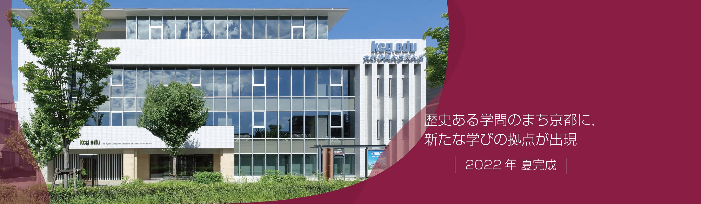

welcome to my profile
contact: subedisandi27@gmail.com
my name is sandesh subedi.i was born in
A.D.1994 july 5 in pokhara,nepal.recently my family has been living chitwan from A.D.2005.i have small family with four member,i had been pass my bachlor digree in A.D. 2015 and then i joined job in finance company.i worked their 2 year in field staff then as a branch manager for 6 year.now i am in japan for my further studies.I was born and brought up in a very adorable family. I have grown up with my elder brother with whom I used to play a lot. I remember each and every game we used to play together. Every moment is very precious to me. In the afternoon, we used to play cricket in our nearby ground. The memories of playing in the ground together are mesmerising.
Another beautiful thing I can remember is my visit to the zoo with my family. We made one zoo visit every year. They used to be those very simple yet fun-filled family picnic moments. We would carry packed food from home that my mother used to cook. My elder brother would click several photographs of us. When I look at those pictures now, the memories come alive. Today, so many things have changed but my childhood memories are still fresh in my heart. It feels so refreshing to relive them again and again. My childhood memories are very close to my heart and make me smile on my difficult days.
college life
Everyone has their own aim. In order to achieve their aim, they have to pass through different stages of life. One of those phases is student life which plays a vital role in building our careers. After passing their high school education, students get admitted to colleges with the hopes to enter in the horizon of their wish. Kathmandu, the capital city of Nepal, has a huge combination of various types of colleges. Here, students hail from not only inside the valley but as well as various parts of Nepal. Students studying in colleges are mature to some extent. It is a challenge for them to adjust their lives themselves. Our country is a developing country and many live in poverty Students from poor family backgrounds (especially from the outside of valley) have economic pressure, so they need to search and handle a job parallel with their studies. Kathmandu is a place not only with more facilities and opportunities but also rife with competition. So, living in a rented room, handling a job in competitive environment and studying in a parallel way is the challenge for everyone. Leaving for college early in the morning, then going to work and returning back to their room in the evening has become the way of living for such students. On the other hand, there is another group of students who are not taking their student life in a serious way. Such groups of students bunk classes telling their parents that they have attended the classes. We can see many students in college uniforms roaming around parks, zoo or any other place with their friends during class. They are used to go to movie theaters missing their classes. We can find other group of students who have bad habits of smoking or drinking. Most of them are in such bad habits because of peer pressure or their curiosity . They are taking their college life just as means to cheat their parents and enjoy themselves. Both groups are not aware of their future. Sharing my experience, when I passed SLC from shree adarsha higher secondary school, I decided to study +2 in kathamandu,. So, I decided to study management at one of the reputed ganesh-man singh multipal collage. Since I am from outside the valley, I have to adjust myself in the rented room. I have to leave towards college at about 7:45 A.M and return at 6 P.M. As I am alone at my room, I have to manage every household activity (like cooking, washing) myself along with my academic activities (like assignments, practical) which creates some difficulties in my college life. I cannot imagine what sort of difficulties I have to bear if I have to handle a job along as well. Talking about my college, it discourages students who bunk their classes as it has own rules about attendance and wishes such rules must be implemented in every colleges. Kathmandu is home to a large number of students from various parts of our country, it is the great opportunity for the students studying here to learn new culture, traditions and many new things from their new friends from different places. Because of huge competition in Kathmandu, the environment teaches them the way to grow in a competitive environment. Kathmandu toughens you up and teaches you a few things about life, inside and outside of college.
education qualification
| school/campus/collage | level | faculty | major subject | passed year |
|---|---|---|---|---|
| shree adarsha higher secondary school | S.L.C | management | economic | 2009 A.D. |
| ganesh man singh multipal campus | plus 2 | management | business math | 2012 A.D. |
| uma badi adarsha shresthan collage | bachlor | management | accountancy | 2015 |
.jpg)
job experience
I was awarded by the company for my best work.
- best field staff perfomance in 5 apr. 2017
- best loan analyzer price in 3 july, 2020
- best branch manager price in 10 mar. 2022
hobbies
i would like to making new friends, reading many kinds of books, travelling new places,helping peoples, social work,loving animals.i would like to beauty of nature so i spent too much time in inside of river, lying on open skey, talking with the animals,stying on the peace place and reading nobel.


further education in japan
i am stying at KCGI with best it course in japan. The Kyoto College of Graduate Studies for Informatics will respond to the needs of society, take charge of the times, and train applied information technology specialists with advanced practical abilities and creativity to lead the next generation. so i choice it for my bright future.
In recent years, with the progress of science and technology, remarkable technological innovation, and rapid changes in the social economy (diversification, complexity, sophistication, globalization, the arrival of the IoT era, etc.), there are growing expectations for the development of advanced professionals in the IT field who are active socially and at an international level. However, no university or graduate school has been able to meet the challenge of fostering advanced IT professionals in technical education in the IT fields over and above information and management specializations. In response to such a challenge, The Kyoto College of Graduate Studies for Informatics was established as Japan's first and only graduate school specializing in IT in April 2004. Being Japan's first computer education institution and through its tradition and achievements, Kyoto Computer Gakuin has been training information processing engineers to meet the needs of industry for 59 years and counting. In addition, based on the global educational network with the Rochester Institute of Technology and other overseas universities, KCGI incorporates the world's latest IT education curriculum. KCGI includes management and business education and aims to train highly skilled professionals in the IT field, fostering top leaders in IT application fields such as CIOs (Chief Information Officers) in a way that conventional graduate schools of research have not been able to. *The name of The Kyoto College of Graduate Studies for Informatics is abbreviated as "KCGI". 